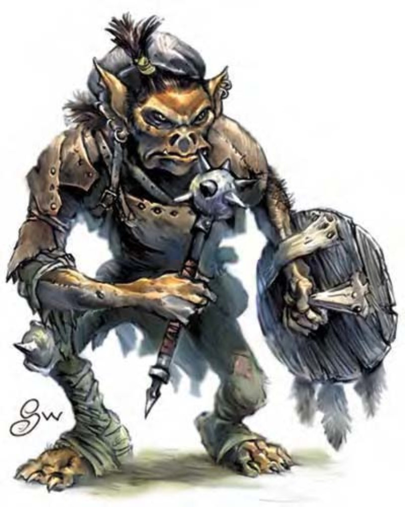

| 资料栏位 | 地精、1级武者 小型人形生物 (类地精) |
| 生命骰 | 1d8+1 (5HP) |
| 先攻 | +1 |
| 速度 | 30英尺 (6格) |
| 防御等级 | 15 (+1体型、+1敏捷、+2皮甲、+1轻型盾)、接触12、措手不及14 |
| 基本攻击/擒抱 | +1 / -3 |
| 攻击 | 钉头锤+2近战 (1d6)；或标枪+3远程 (1d4) |
| 全力攻击 | 钉头锤+2近战 (1d6)；或标枪+3远程 (1d4) |
| 占据/触及 | 5英尺 / 5英尺 |
| 特殊攻击 | ― |
| 特殊能力 | 黑暗视觉60英尺 |
| 豁免 | 强韧+3、反射+1、意志-1 |
| 属性 | 力量11、敏捷13、体质12、智力10、感知9、魅力6 |
| 技能 | 躲藏+5、聆听+2、潜行+5、骑术+4、侦察+2 |
| 专长 | 警觉 |
| 环境 | 温带平原 |
| 组织 | 成队 (4-9)、一团 (10-100，加上100%非战斗人员，加上每20个成年地精1个3级军士、1个4-6级干部)、战团 (10-24，配有座狼座骑)、一族 (40-400，加上100%非战斗人员，加上每20个成年哥布林1个3级军士、1-2个4-5级校尉、1个6-8级干部、10-24只座狼以及2-4只凶暴狼) |
| 挑战级数 | 1/3 |
| 宝藏 | 标准 |
| 阵营 | 通常中立邪恶 |
| 进化 | 视人物职业而定 |
| 等级修正值 | +0 |
这种小型的人形生物有张扁平的脸，塌鼻子、尖耳朵，一张阔嘴里有小而锐利的獠牙。他可以直立行走，但手臂却垂到超过膝盖。
地精是一种被大多数人讨厌的小型人形生物。然而若是放任不管，他们的庞大数量、快速繁衍能力与邪恶的性格将会迅速侵占破坏文明地区。
地精身高约3-3.5英尺，体重40-45磅。眼神呆滞，颜色介于红黄之间。地精的肤色分布从黄色、深褐到深红色，通常同族中的所有成员肤色相同。地精穿着深色的皮制服装，多为黄褐、接近泥土的颜色。
地精通晓地精语，智力达到12以上则通晓通用语。
在家乡之外出没的地精多为武者，数据域位中为1级武者的范例。
战斗被较大、较强壮的生物欺侮的经验教会了地精如何善用自己的优势：人多势众与邪恶的机巧。在他们的社会里公平战斗毫无意义。他们偏好伏击、人海战术、肮脏的诡计与其他计谋。
地精不善谋略且天性懦弱，战况不利时会拔腿就跑。若有人提供适当的建议，他们也可以实行较复杂的计划，在这种状况下数量便成为可怕的优势。
技能：地精在进行“潜行”与“骑术”检定时具有+4种族加值。地精骑士 (座狼) 通常会选“骑乘战斗”作为专长来取代“警觉”，此改变将使其“侦察”与“聆听”检定加值由+3降为+1。
挑战级数：若具有非玩家人物职业，地精的挑战级数等于人物等级-2。
地精的社会结构地精社会为部落形态。一般而言他们的领导者都是全部落中最大只、最强壮或最聪明的个体。他们几乎没有隐私概念，所有人同在大空间里吃喝生活，只有领袖会分开住。地精藉由通过抢劫与偷窃为生（偏好对无法保护自己的弱者下手），他们会在夜里潜入他人巢穴、村庄甚至城镇中夺取想要的东西。地精最多也只敢拦截路上或森林中的旅行者，扒光受害者的所有财物，甚至包括他们身上的衣服。地精有时候也会抓奴隶到部落的巢穴或营地里做苦工。
一团或一族地精中非战士的幼年成员数量为成人的一半。
地精的主神为魔古比耶，他鼓动其信徒扩张数量以压倒竞争者。
地精的人物地精领导者多为游荡者或战士兼游荡者。地精牧师信仰魔古比耶，可由下列领域择二：混乱、邪恶或诡术。大部分的地精施法者职业为导师，他们偏好使用可以愚弄或使对手困惑的法术。
地精人物具有下列种族特性：
― -2力量、+2敏捷、-2魅力。
― 小型、防御等级+1加值、攻击检定+1加值、“躲藏”检定+4加值、擒抱检定-4减值、举重和负重能力是中型人物的四分之三。
― 地精的基本行走速度为30英尺。
― 黑暗视觉可达60英尺。
― 进行“潜行”与“骑术”检定时具有+4种族加值。
― 母语：通用语、地精语。额外语言：龙语、精灵语、巨人语、豺狼人语、兽人语。
― 适合职业：游荡者。
此处列出的地精武者在计算种族修正值前，具有下列属性：力量13、敏捷11、体质12、智力10、感知9、魅力8。